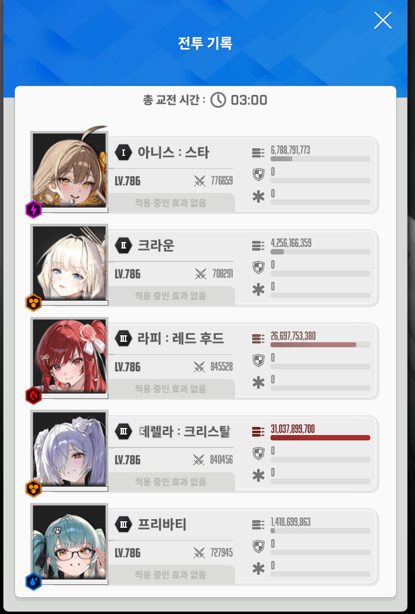
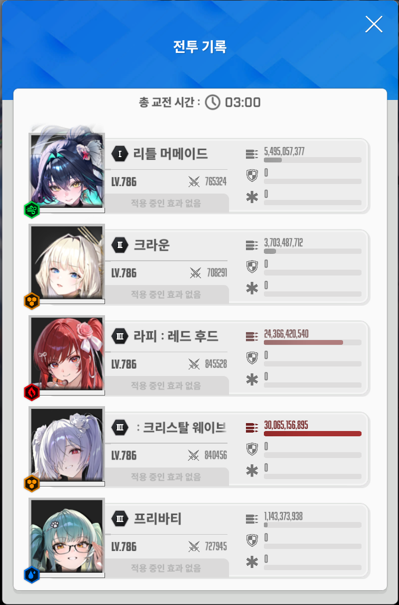

정확히 14버 사용
라피 풀코
101 / 45 / 3장
수렐 풀코 (MG사용)
105 / 44 / 2장
그나마 차이가 있다하면 필콘렙이 100정도 더 높은거 정도
아니스 넣고해도 동스펙 기준 수렐이 더 쌨음
+ 세이렌일때 추가함

원본: https://gall.dcinside.com/mgallery/board/view/?id=gov&no=5763033
백업 시각:

정확히 14버 사용
라피 풀코
101 / 45 / 3장
수렐 풀코 (MG사용)
105 / 44 / 2장
그나마 차이가 있다하면 필콘렙이 100정도 더 높은거 정도
아니스 넣고해도 동스펙 기준 수렐이 더 쌨음
+ 세이렌일때 추가함
